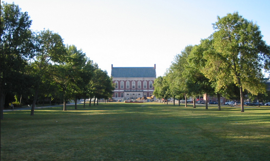

I am currently a junior at the University of Maine in Orono. It was never my original intention as a high schooler to end up here; I wanted to be different, go far away, etc. However, here I am, several years later, and I am so happy I made the choice to attend UMaine. I started out as a nursing major and stayed so for 2 entire years. It wasn't until my first round of clinical that I decided that career path was not for me. It wasn't so much the "blood and guts" as it was the physical labor and hardships I had to see my patients go through. I have so much more respect for nurses, and I definitely learned a lot through my two years in the program. I made the switch into the Business School, with a major in accounting. After a semester of accounting, I then decided to switch my major to Business Management with a minor in accounting. I am an extremely restless person, and I feel that my versatility and energy will be useful in a more broad position than that of an accountant.
I'm due to graduate in the Fall of 2018 (hopefully). I would be thrilled to start my career in a managerial or possibly accounting position at a bank, hospital (put that nursing school knowledge to use), or an automotive company. There are so many options that will be available to me, and I am looking forward to exploring them.